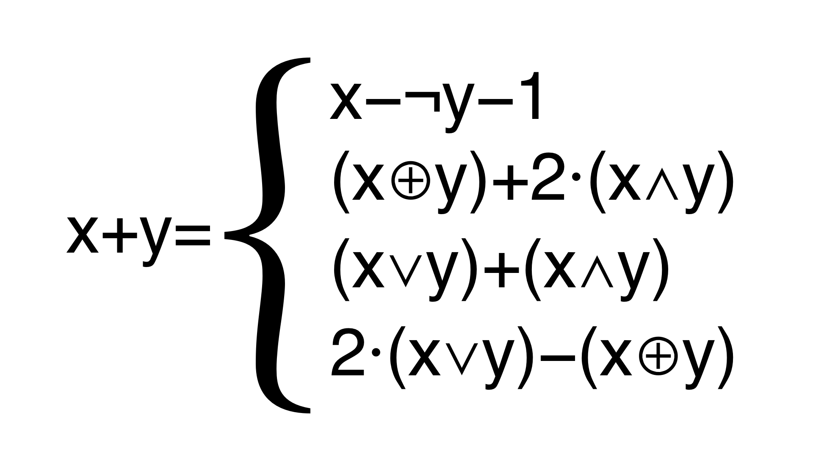

Replace integer arithmetic with more complex expressions, encoded with Mixed Boolean Expressions (MBA). For example, the following identities can be used to encode integer addition:
x + y = x - ¬ y - 1
= (x ⊕ y) + 2·(x ∧ y)
= (x ∨ y) + (x ∧ y)
= 2·(x ∨ y) - (x ⊕ y)
For example, Tigress might replace
z = x + y + w
with
z = (((x ^ y) + ((x & y) << 1)) | w) +
(((x ^ y) + ((x & y) << 1)) & w);
Here's a LigerLabs video that discusses this transformation:
| Option | Arguments | Description |
|---|---|---|
| --Transform | EncodeArithmetic | Replace integer arithmetic with more complex expressions. |
| --EncodeArithmeticKinds | builtin, plugins, generated | Whether to use builtin or plugin patterns, or both. From version 3.3.3. Default=builtin.
|
| --EncodeArithmeticMaxLevel | INTSPEC | How deep to recurse into expressions. Default=1. |
| --EncodeArithmeticMaxTransforms | INTSPEC | How many transformations to perform on each expression. Default=1. |
| --EncodeArithmeticRepeatTimes | INTSPEC | How many times to repeat the rewriting process. Equivalent to calling EncodeArithmetic multiple times. From Version 3.3 Default=1. |
| --EncodeArithmeticDumpFileName | string | Name of Json file onto which we dump transformed expression. The actual file will be function-name_number_fileName.json. From version 3.3.2. Default=100. |
There are two parts to attacking an MBA expression: first you have to find the expression, and then you have to decode it (i.e. turn it back into something resembling it's original form). You can split up expressions to make them more diffiult to locate in the code (both statically and dynamically).
| Option | Arguments | Description |
|---|---|---|
| --EncodeArithmeticMaxSplit | INTSPEC | How many pieces in which to split the transformed expression. From Version 3.3 Default=1. |
| --EncodeArithmeticAddImplicitFlow | BOOLSPEC | Add implicit flow to the pieces split out from an encoded expression. You need to set --EncodeArithmeticMaxSplit=value greater than zero for this to take effect. From Version 3.3 Default=false. |
| --EncodeArithmeticImplicitFlow | S-Expression | The type of implicit flow to insert. See --AntiTaintAnalysisImplicitFlow for a description. Default=none. |
| --EncodeArithmeticAddOpaques | BOOLSPEC | Add opaque predicates to the pieces split out from an encoded expression. You need to set --EncodeArithmeticMaxSplit=value greater than zero for this to take effect. From Version 3.3 Default=false. |
For each operator, there are many possible encodings, and at transformation time, these are selected from randomly.
You can list every rewrite pattern -- its name and the expression it emits --
and restrict the transformation to a chosen subset of patterns by name. Both
facilities are available only in deity
mode. Use --EncodeArithmeticList to discover the exact names, then
pass them to --EncodeArithmeticSelect:
tigress --DeityMode=... --Transform=EncodeArithmetic \
--EncodeArithmeticList=true --Functions=main input.c --out=out.c
tigress --DeityMode=... --Transform=EncodeArithmetic \
--EncodeArithmeticSelect=Frobnitz_add3,Wibble_xor7 \
--Functions=main input.c --out=out.c
| Option | Arguments | Description |
|---|---|---|
| --EncodeArithmeticList | BOOL | Print the whole rewrite-pattern catalog -- every pattern's name and the expression it emits, shown on symbolic operands -- and continue. Useful for finding the exact names to pass to --EncodeArithmeticSelect. Refused unless the deity key is supplied with --DeityMode. |
| --EncodeArithmeticSelect | (Deity mode only.) Comma-separated list of exact rewrite-pattern names to draw from, restricting the rewriter to just those encodings. Names come from --EncodeArithmeticList. Refused unless the deity key is supplied with --DeityMode. |
There have been many recent papers on attacking MBA expressions. To facilitate such attacks
you can dump all the transformed expressions onto a Json file for further processing.
Simply set --EncodeArithmeticDumpFileName=filename.json.
How well does an encoded expression resist being simplified back? We ran
a set of representative encoded expressions through the C compiler (-O2)
and the public Mixed Boolean-Arithmetic simplifiers
SiMBA,
MBA-Blast and
GAMBA. A tool
solves a row when its output is verified equal to the ground truth (by
Z3) and reduced to ground-truth size. A row's resilience is the weakest
tool that still solves it: trivial (the optimizer folds it),
weak (a linear solver folds it), medium (only a general solver
does), strong (survives all).
The take-away: resilience tracks the function's algebraic class, not the size of the encoding. A linear operator is trivial or weak however it is encoded; a polynomial one (a product) reaches medium; and a permutation-polynomial wrap of a linear operator still looks enormous yet stays weak — a linear solver recovers it, because the underlying function is unchanged.
EncodeArithmetic MBA resilience — which tools reduce each obfuscated form to its ground truth (z3-verified). Generated 2026-09-20. name class ground truth compiler -O2 SiMBA MBA-Blast GAMBA resilience add_xor2and linear-2 x+y✓ ✓ ✓ ✓ trivial add_or_and linear-2 x+y✓ ✓ ✓ ✓ trivial sub_notplus linear-2 x-y✓ ✓ ✓ ✓ trivial xor_or_and linear-2 x^y✓ ✓ ✗ ✓ trivial and_incexc linear-2 x&y✓ ✓ ✓ ✓ trivial add_eyrolles linear-2 x+y✗ ✓ ✓ ✓ weak add3_adder linear-3 x+y+z✗ ✗ ✗ ✓ medium add4_pairs linear-4 x+y+z+w✗ ✓ ✗ ✓ weak add_const linear-2c x+y+42✓ ✓ ✗ ✓ trivial mul_poly poly-2 x*y✗ ✗ ✓ ✓ weak mul_poly_c poly-2c x*y-41✗ ✗ ✗ ✓ medium mul_lin_z poly-3 (x+y)*z✓ ✗ ✗ ✓ trivial mul_xor poly-4 x*y+(z^w)✗ ✗ ✗ ✓ medium sq_poly poly-1 x*x✓ ✗ ✓ ✓ trivial permpoly_nl nonlin-wrap x+y✗ ✓ ✗ ⌛ weak solved 8/15 9/15 7/15 14/15 ✓ solved (output z3-equal to ground truth) ✗ not solved / wrong ⌛ timeout – tool not installed.
Resilience = the weakest tool that still solves it (weakest→strongest: compiler=trivial, SiMBA/MBA-Blast=weak, GAMBA=medium; strong = survives all).
The identities are taken from the book Hacker's Delight (Henry S. Warren), from Zhou and Main's Diversity via Code Transformations, and from the linear Mixed Boolean-Arithmetic families of Ninon Eyrolles' PhD thesis (Paris-Saclay, 2017), as machine-checked in the Coq development of Blazy and Hutin, Formal Verification of a Program Obfuscation Based on Mixed Boolean-Arithmetic Expressions (CPP 2019).